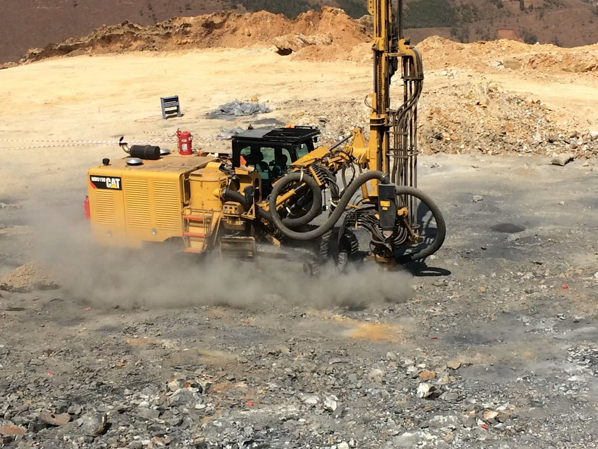

Mission
Delivering critical minerals to allied supply chains
Our objective is to deliver critical minerals production to U.S. and allied supply chains, providing the key resources that will define and power the 21st century global economy.
Nimba County, Liberia
U.S. Strategic Resources is an American-backed mining investment vehicle formed to explore for critical minerals and rare earths in West Africa.
Exploration stage. No mineral resource or reserve has been defined on either license.
Who we are
Formed to explore for critical minerals and rare earths in West Africa, on two contiguous license areas in a jurisdiction aligned with the United States and its allies.
Mission
Our objective is to deliver critical minerals production to U.S. and allied supply chains, providing the key resources that will define and power the 21st century global economy.
Execution
We are backed by a world-class team of U.S. foreign diplomacy experts and mineral exploration executives who have made discoveries, built mines, and operated across West Africa for decades.

Exploration, not production
Drilling and prospectivity work across two contiguous license areas on the gold-prospective Cestos shear zone.
About us — Assets
Two contiguous license areas in Nimba County with coincident multi-element anomalies across gold and six critical minerals.
The assets →About us — Jurisdiction
Liberia: U.S. dollar legal tender, English-language common law, and a 243 km railway already running to deep water.
Jurisdiction →Leadership
A world-class team of U.S. foreign diplomacy experts and mineral exploration executives who have made discoveries, built mines, and operated across West Africa for decades.
Board & management →Metals & markets
Technology metals are moving into a structural supply deficit — a setup that favors them over the broader commodity complex.
Metals & markets →